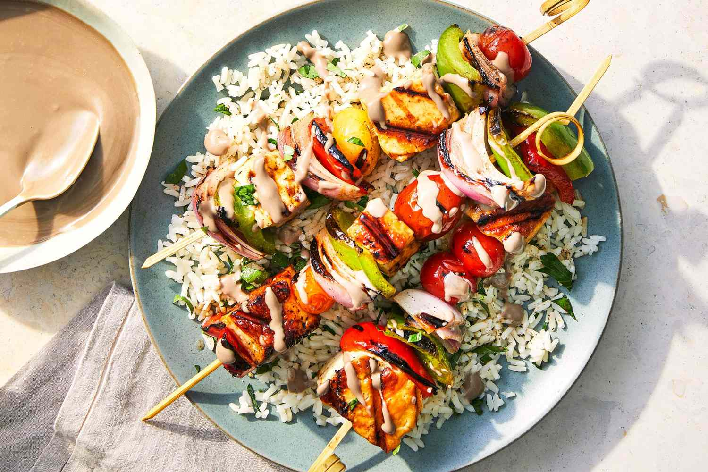
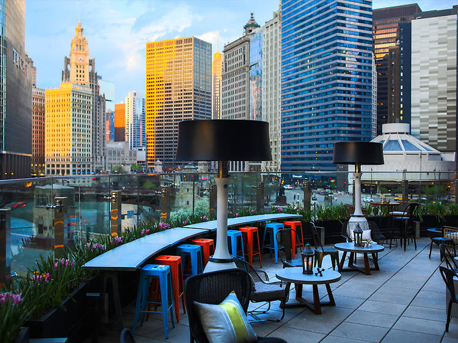

Embark on a Culinary Odyssey:
Indulge in a Culinary Journey with Our Authentic Mediterranean Cuisine, Blending Tradition and Modernity in the Heart of Chicago's Skyline

- Since its inception in 1980, Little Lemon has been a culinary cornerstone, initially offering its first Mediterranean plate to meet the growing culinary demands of Chicago.
- From humble beginnings, our commitment to quality and innovation has transformed our dishes into an exquisite form of cuisine that captivates the senses.
- Over the years, we've evolved and refined our recipes, turning each dish into a masterpiece that reflects our passion for authentic Mediterranean flavors. Little Lemon is not just a restaurant; it's a culinary journey that invites you to explore the rich tapestry of tastes and textures that define our unique approach to dining.
- Our dedication to culinary excellence has not gone unnoticed. The Chicago Tribune, recognizing our distinctive offerings, hailed us as "one of the most unique dining experiences," a testament to our commitment to providing an unparalleled gastronomic adventure. Little Lemon stands as a symbol of culinary innovation, blending tradition with modernity to create an unforgettable dining experience.

Savor the Exquisite Fusion: Signature Rice with Skewer Delight
- Embark on a culinary odyssey with our Signature Rice with Skewer Delight—a tantalizing fusion of flavors and textures. The dish features perfectly cooked rice, infused with aromatic spices for a comforting base. Complemented by succulent skewers, each grilled to perfection, the ensemble promises a symphony of tastes.
- What sets this dish apart is the meticulous marination of the skewers, offering a medley of savory delights. From tender meats to charred vegetables, each skewer tells a tale of culinary craftsmanship. Accompanied by zesty tzatziki, spicy harissa, or tangy chimichurri, the dish becomes a personalized experience, with flavors that dance on your palate.
- Savor the harmony of fluffy rice, flavorful skewers, and exquisite sauces—a celebration of diverse tastes. It's more than a meal; it's a culinary masterpiece that invites you to indulge in an extraordinary dining experience. Treat yourself to our Signature Rice with Skewer Delight and discover a world of flavors that will linger in your memory.

Discover Little Lemon's Oasis
- Nestled in the heart of Chicago's skyline, Little Lemon provides a culinary oasis where tradition meets modernity.
- With a prime location that offers stunning views and easy accessibility, Little Lemon stands as a beacon for those seeking an authentic Mediterranean experience. Whether you're a local resident or a visitor exploring the vibrant streets of Chicago, our doors are open to welcome you.
- To accommodate your culinary cravings, our hours of operation are thoughtfully designed. We invite you to join us during our operating hours to savor the delightful flavors of our signature dishes.
- Join us at Little Lemon, and let the city's energy fuse with the warmth of our hospitality as we redefine the dining experience in the heart of Chicago.